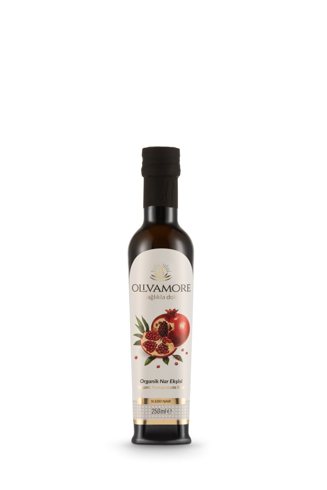

Tarif · Nar Ekşisi
Nar Ekşili Gavurdağı Salatası
Kaşığa her malzemeden gelecek kadar ince doğranmış; cevizli, canlı ve dengeli bir sofra salatası.
20 dk · 4 kişilik

Kaşığa her malzemeden gelecek kadar ince doğranmış; cevizli, canlı ve dengeli bir sofra salatası.
20 dk · 4 kişilik
Ürün notu: Nar ekşisi sirke değildir; yoğunlaştırılmış narın tatlı-ekşi meyve sosudur.
Sulu domatesi ve cevizi bir arada tutan yoğun meyve ekşiliği; servisten hemen önce ekle.
